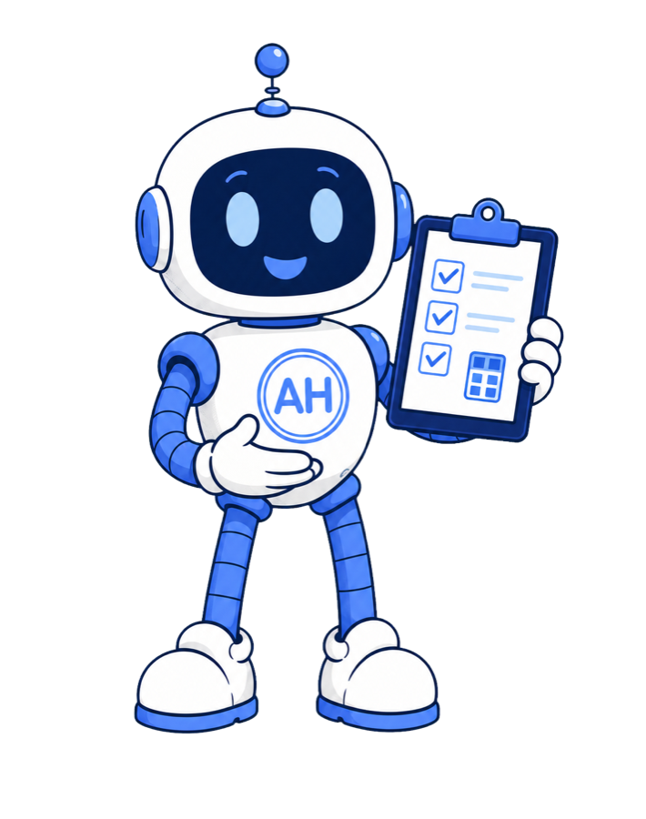

Practical tools
Useful calculations and planning aids — with assumptions shown.
A health tool should explain what it can estimate, what it cannot determine, and when professional interpretation matters. These interactive examples run only in your browser.

Quick calculators
Explore a number—with its limitations visible.
Open only the calculator you need. Each result explains the assumptions that shape the estimate.
General screeningBMI calculatorEstimate body mass index from height and weight.
Sleep planningSleep debt calculatorCompare recent sleep with your chosen nightly target.
Timing estimateCaffeine half-life calculatorEstimate how much caffeine may remain over time.
Routine timingFasting timerTrack elapsed time toward a fasting goal on this device.
00:00:00
Choose a goal and start when your fast begins.
Calculate a completed fast Date & time
This timer is an organizational aid, not a recommendation to fast. Fasting may be unsafe with pregnancy, a history of an eating disorder, diabetes, certain medicines, or some medical conditions. Ask a qualified healthcare professional what is appropriate for you, and stop if you feel unwell.
Focus and recoveryPomodoro timerAlternate focused work with short, intentional breaks.
25:00
Start a 25-minute focus interval. Your progress stays on this device.
The classic rhythm is 25 minutes of focus followed by a 5-minute break, with a longer break after four focus sessions. Pause or change intervals whenever you need to.
Medication organization
Keep the instructions you already have in one place.
Create a local schedule that can flow directly into your visit plan.
Stored in this browserMedication scheduleOrganize medicine names, doses, timing, instructions, notes, and refill dates.
Entries are stored only in this browser. Copy instructions exactly from the prescription label, and confirm uncertainties with a pharmacist or prescriber.
Visit preparation
Prepare once. Leave with a brief and better questions.
Enter your context one time. The tool creates a one-page visit brief plus a prioritized question list.
1 Concise visit brief2 Five focused questions3 Copy or print together
Nothing is automatically saved or sentPrepare for a healthcare visitBest for organizing what matters, sharing useful context, and deciding what to ask first.
Review the generated plan for accuracy before sharing it. It is not a medical record, diagnosis, treatment recommendation, or substitute for a healthcare professional’s medication list. Adapt the questions to your situation and seek urgent care for emergencies. Inspired by AHRQ and NIA visit-preparation guidance.
Advanced clinical tools
Professional interpretation neededUse with a clinician or pharmacist.
These calculations depend on clinical inputs and should not be used independently to make medication decisions.
Advanced · medication-related estimateCreatinine clearanceEstimate Cockcroft–Gault creatinine clearance for educational discussion—not dosing.
A helpful next step
A useful number should lead to a useful question.
Use Otto to understand a tool’s assumptions, then decide whether the result belongs in a conversation with a pharmacist or other healthcare professional.